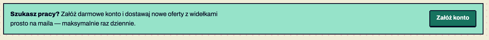
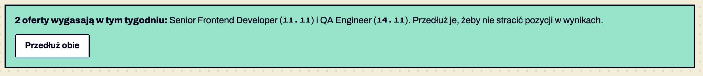

Komponenty / Callout
Callout
stabilny Callout (wskazówka) · od 1.0
wycofywany Callout błędu · od 1.6 — zastąpione: .notice.notice-error (§6.15), usunięcie w 2.0
Wyróżniony komunikat w treści: wskazówka, ostrzeżenie o terminie, zaproszenie do akcji. Nie zastępuje komunikatu błędu formularza. Potwierdzone w dokumentacji S01 §6.10–6.11.


Anatomia i komponenty składowe
| Część / rola | Wymagana / opcjonalna | Składnik / źródło | Co można zmienić / status |
|---|---|---|---|
| tło --mint, ramka 2 px, bez cienia | wymagane | .callout | Potwierdzone w dokumentacji |
| pogrubiony lead | opcjonalny | strong | Potwierdzone w dokumentacji |
| przycisk | opcjonalny | K01 | Potwierdzone w dokumentacji S10, S16 |
Warianty i zastosowanie
| Oś | Wartość | Kiedy użyć | Co się zmienia | Ograniczenia / status / źródło |
|---|---|---|---|---|
| rola | CTA | zachęta (landing) | przycisk główny po prawej | Potwierdzone w dokumentacji S10 |
| rola | ostrzeżenie o terminie | panel pracodawcy | przycisk drugorzędny | Potwierdzone w dokumentacji S16 |
| ton | błąd / sukces | — | — | od v1.7 powiadomienia K22; .callout-danger wycofywany (od 1.7, usunięcie w 2.0) Potwierdzone w dokumentacji |
Zachowanie, treści i lokalizacja
Statyczny.
Zalecane i niewskazane
| Zalecane — przykład | Niewskazane — przykład | Powód / status / źródło |
|---|---|---|
| jeden callout w sekcji | callout w każdej sekcji | traci wagę Rekomendacja |
| callout ostrzegawczy z tekstem „wygasają w tym tygodniu” | sam kolor | Potwierdzone w dokumentacji |
Tokeny i style
| Zastosowanie | Token | Tryb / wariant | Wartość | Źródło | Status |
|---|---|---|---|---|---|
| tło | --mint | #96E3C9 | S01 | Potwierdzone w dokumentacji |
Wymiary, odległości i układ
| Elementy / krawędzie | Wariant | Wartość / relacja | Token | Reguła / źródło / dokładność |
|---|---|---|---|---|
| padding | — | 14×16 px | — | Potwierdzone w dokumentacji |
Typografia
| Rola tekstu | Styl | Font / weight | Rozmiar | Interlinia | Tracking | Kolor / zachowanie / status |
|---|---|---|---|---|---|---|
| lead | — | Archivo 800 | 16 | — | — | Potwierdzone w dokumentacji |
Przykład na żywo
Ta sama sekcja co w examples/komponenty.html — działa na systemie 1.11.0. Przełącz motyw w nagłówku, żeby zobaczyć tryb ciemny.
Formularz, błąd i ładowanie
Stan nie zmienia rozmiaru; kolor nigdy nie jest jedynym sygnałem; animacje skokowe, wyłączone przy „ogranicz ruch”.
Dokończ adres e-mail — brakuje domeny, np. @firma.pl.
Kwota brutto miesięcznie.
Aplikowanie jest wyłączone.
Backend
···Nie udało się wczytać ofert
Sprawdź połączenie i spróbuj jeszcze raz.
BŁĄD 503Kod przykładu
<section class="ex" id="stany" aria-labelledby="h-st">
<h2 id="h-st">Formularz, błąd i ładowanie</h2>
<p>Stan nie zmienia rozmiaru; kolor nigdy nie jest jedynym sygnałem; animacje skokowe, wyłączone przy „ogranicz ruch”.</p>
<div class="grid3">
<form class="panel-filters" id="filtry-demo" data-drawer-form data-filter-for="demo" aria-labelledby="h-f">
<h2 id="h-f">Filtry</h2>
<div class="field"><label for="q">Słowa kluczowe</label><input id="q" type="search" data-search placeholder="np. Unity"></div>
<fieldset><legend>Tryb pracy</legend>
<label class="checkbox"><input type="checkbox" name="tryb" value="zdalnie">Zdalnie <span class="opt-n"></span></label>
<label class="checkbox"><input type="checkbox" name="tryb" value="hybrydowo">Hybrydowo <span class="opt-n"></span></label>
<label class="checkbox"><input type="checkbox" name="tryb" value="stacjonarnie">Stacjonarnie <span class="opt-n"></span></label>
<label class="checkbox"><input type="checkbox" data-require="salary">Tylko z widełkami <span class="opt-n"></span></label>
</fieldset>
<fieldset><legend>Widełki (zł / mies.)</legend>
<div class="range"><label class="field"><span>Od</span><input type="number" inputmode="numeric" data-min="salary" id="sal-od" placeholder="10 000"></label><span class="dash" aria-hidden="true">–</span><label class="field"><span>Do</span><input type="number" inputmode="numeric" data-max="salary" id="sal-do" placeholder="30 000"></label></div>
</fieldset>
<button class="btn btn-primary btn-full" type="submit">Pokaż <span data-count-for="demo" data-count-forms="ofertę|oferty|ofert">3 oferty</span></button>
</form>
<div class="stack" style="display:grid;gap:16px">
<div class="field is-error"><label for="mail">E-mail do kontaktu</label><input id="mail" type="email" value="anna.kowalska@" aria-invalid="true" aria-describedby="mail-err"><p class="field-error" id="mail-err">Dokończ adres e-mail — brakuje domeny, np. @firma.pl.</p></div>
<div class="field"><label for="sal">Widełki od (zł)</label><input id="sal" type="text" inputmode="numeric" value="18000" aria-describedby="sal-h"><p class="field-hint" id="sal-h">Kwota brutto miesięcznie.</p></div>
<div class="callout"><strong>Wskazówka:</strong> oferty z widełkami dostają 2× więcej aplikacji.</div>
<div class="notice notice-error"><span class="notice-icon"><span class="icon i-error" aria-hidden="true"></span></span><div class="notice-body"><strong class="notice-title">Oferta wygasła 3 dni temu</strong><p>Aplikowanie jest wyłączone.</p></div></div>
</div>
<div class="stack" style="display:grid;gap:16px">
<section class="panel" aria-labelledby="p-load" aria-busy="true"><header class="panel-head"><h2 id="p-load">Backend</h2><span class="count">···</span></header>
<ol class="list" aria-hidden="true">
<li class="skel-row"><span class="skel skel-n"></span><span class="skel skel-av"></span><span class="skel" style="width:62%"></span></li>
<li class="skel-row"><span class="skel skel-n"></span><span class="skel skel-av"></span><span class="skel" style="width:48%"></span></li>
<li class="skel-row"><span class="skel skel-n"></span><span class="skel skel-av"></span><span class="skel" style="width:70%"></span></li>
</ol><span class="sr-only">Wczytywanie ofert…</span></section>
<div class="load-error" role="alert"><h3>Nie udało się wczytać ofert</h3><p>Sprawdź połączenie i spróbuj jeszcze raz.</p><button class="btn btn-secondary btn-compact" type="button" data-demo-load>Spróbuj ponownie</button><span class="code">BŁĄD 503</span></div>
</div>
</div>
<div class="dither" aria-hidden="true" style="margin-top:32px"></div>
</section>Właściwości i atrybuty
| Właściwość / atrybut | Typ | Wartości pokazane / opisane | Domyślna | Efekt i zastosowanie | Zależności / status / źródło |
|---|---|---|---|---|---|
| treść | tekst | — | — | — | Potwierdzone w dokumentacji |
Specyfikacja (design.md §6.10)
| Komponent | Specyfikacja |
|---|---|
| Okruszki | Archivo 14, link --link, separator „/” w --ink-3 |
| Motto panelu | Archivo 14 kursywa, --ink-3, w cudzysłowie „…” |
| Callout | tło --mint (jasny wariant #EAFBC8 dopuszczalny jako tint), ramka 2 px, promień 0 |
| Pusty stan | pixel-ilustracja + nagłówek h1 + jedno zdanie + przycisk główny |
| Separator | .dither (§5) |
| Lista z punktorami | .list-square (§5) |
Cel: WCAG 2.2 AA. Statyczne materiały i testy automatyczne w Chrome nie dowodzą zgodności — miejsca oznaczone „Do testu we wdrożeniu” wymagają testu z czytnikiem ekranu (design.md §0.6).
| Obszar | Ustalenie lub wymaganie | Dowód / status | Kryterium / wzorzec | Jak sprawdzić |
|---|---|---|---|---|
| rola | dla pilnych komunikatów rozważyć role=status | Rekomendacja | WCAG 4.1.3 | czytnik Do testu we wdrożeniu |
| kontrast | ink na #96E3C9 ≥ 12:1 | Potwierdzone w dokumentacji | WCAG 1.4.3 | — |
Źródła
S01 §6.10; S10, S16.